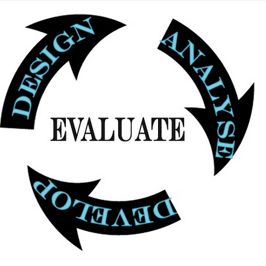

12.11 Passo Nove: Avaliar e inovar



O último pilar fundamental para um ensino e aprendizagem de qualidade na era digital assenta na avaliação e inovação: monitorizar e analisar o trabalho desenvolvido, identificando caminhos para a sua melhoria contínua (para um debate aprofundado sobre a avaliação no ensino on-line, ver Gunawardena et al., 2000).
12.11.1 Por que a avaliação é importante
Para fins de progressão na carreira acadêmica, apresenta-se relevante que o docente disponha de evidências que comprovem a eficácia da sua docência. Novas ferramentas e abordagens pedagógicas surgem de forma contínua, abrindo espaço para a experimentação letiva. Ao implementarmos inovações, torna-se necessário avaliar o impacto da integração de novos recursos ou desenhos instrucionais. Trata-se de uma atitude profissional. Contudo, o motivo central reside na premissa de que a docência, à semelhança do golfe, assenta na busca contínua por uma perfeição inatingível, sendo sempre possível melhorar as práticas letivas através da análise sistemática das experiências anteriores.
12.11.2 O que avaliar: avaliação somativa
No Passo 1, defini o conceito de qualidade da seguinte forma:
metodologias de ensino que apoiam de forma eficaz os estudantes no desenvolvimento dos conhecimentos e competências necessários para a era digital.
Face às premissas desta obra, considero necessário redefinir o design da maioria das disciplinas e cursos para atingir estas metas. Torna-se, por isso, prioritário avaliar se estas novas propostas revelam maior eficácia face ao modelo tradicional de base. Uma via de avaliação assenta na comparação de indicadores como:
- as taxas de conclusão do curso devem apresentar-se equivalentes ou superiores na versão redefinida da disciplina;
- as classificações ou medidas de aproveitamento devem ser equivalentes ou superiores na versão redefinida.
Estas variáveis são quantificáveis. Devemos visar taxas de conclusão mínimas de 85%, ou seja, de cada 100 alunos que iniciam o curso, 85 concluem com aproveitamento as avaliações finais (diversas disciplinas tradicionais registam taxas inferiores, contudo, se valorizamos o ensino de qualidade, devemos envidar esforços para apoiar o maior número de estudantes a atingir os padrões definidos).
O segundo parâmetro reside na comparação de classificações. Espera-se registrar um volume equivalente ou superior de conceitos elevados (notas A e B) na nova versão face ao modelo presencial clássico, preservando a exigência científica da avaliação.
Contudo, para assegurar a validade da avaliação, cumpre delimitar as competências cognitivas e práticas necessárias para a era digital e aferir a eficácia da docência no seu desenvolvimento. O terceiro parâmetro assenta no seguinte pressuposto:
- o novo design instrucional deve promover resultados de aprendizagem diferenciados e alinhados com as exigências da era digital.
Este parâmetro apresenta maior complexidade por implicar a transformação das metas pedagógicas de base. Integra a avaliação de competências de expressão multimídia dos estudantes, competências de pesquisa, seleção, análise e aplicação crítica da informação (gestão do conhecimento), dimensões frequentemente ausentes das avaliações tradicionais de sala de aula. Exige julgamentos qualitativos sobre quais metas priorizar, processo que demanda a validação de comissões curriculares de departamento ou de agências externas de acreditação.
A consolidação de novos resultados de aprendizagem com um design instrucional inovador pode carecer de tempo, devendo contudo apresentar estabilidade num horizonte de dois a três anos.
12.11.3 O que avaliar: avaliação formativa
Contudo, a aferição destes três parâmetros é insuficiente para diagnosticar quais componentes funcionaram e quais revelaram fragilidades na disciplina. Torna-se necessário analisar as variáveis com impacto na aprendizagem dos alunos, estruturadas nos passos 1 a 8. Apresentam-se algumas questões de referência:
- Os objetivos e metas de aprendizagem eram claros para os estudantes?
- Quais resultados de aprendizagem apresentaram maior complexidade para os alunos?
- Os recursos de estudo e a estrutura do curso revelavam-se claros e organizados?
- Os materiais letivos e as ferramentas digitais encontravam-se acessíveis de forma permanente (24 x 7)?
- Quais temas suscitaram debates produtivos nos fóruns e quais registaram fraca adesão?
- Os estudantes integraram os materiais de estudo sugeridos nas discussões e trabalhos entregues?
- Os alunos pesquisaram referências científicas próprias e integraram-nas com consistência nas atividades do curso?
- Quais atividades práticas registaram aproveitamento satisfatório e quais falharam? Por quais motivos?
- Quais materiais de estudo registaram maior e menor consulta pelos estudantes?
- As avaliações propostas mediram com rigor as competências e conhecimentos visados pelo curso?
- Registou-se sobrecarga horária de trabalho para os alunos?
- Verificou-se sobrecarga de trabalho para o docente responsável?
- Em caso afirmativo, que medidas adotar para racionalizar a carga horária de trabalho (de docentes e alunos) salvaguardando a qualidade letiva?
- Qual o nível de satisfação dos estudantes com o curso?
- Qual o meu nível de satisfação pessoal com o curso?
Sugiro algumas metodologias para responder a estas questões com otimização do tempo de trabalho.
12.11.4 Como avaliar os fatores de indução ou inibição da aprendizagem
O ambiente digital disponibiliza fontes de informação superiores às da sala de aula presencial convencional pelo fato de registrar pegadas digitais das atividades letivas:
- classificações obtidas pelos estudantes;
- padrões de participação individual nas tarefas virtuais (testes de autoavaliação, fóruns, audição de podcasts);
- análise qualitativa das discussões nos fóruns (verificando a qualidade e complexidade dos comentários para aferir o nível de reflexão crítica);
- portfólios eletrônicos, ensaios acadêmicos e respostas de exames escritos;
- inquéritos de avaliação preenchidos pelos estudantes;
- grupos de discussão dirigidos (focus groups).
Antes de iniciar a avaliação, defina as questões a responder e mapeie quais fontes de dados apresentam maior adequação para obter essas respostas.


Concluída a disciplina, analiso as classificações finais identificando os alunos com aproveitamento satisfatório e os que registaram dificuldades (trabalhando com amostragens em turmas numerosas). Retrocedo então para monitorizar os seus padrões de participação on-line, processo facilitado por softwares de análise de aprendizagem (learning analytics) ou realizado manualmente no LMS. Diagnostico fatores de pendor individual (ex.: estudantes de perfil comunicativo) e variáveis do próprio curso (ex.: clareza dos objetivos ou modo de exposição dos conteúdos). Esta abordagem qualitativa fundamenta as atualizações a integrar no planeamento letivo subsequente. Posso, por exemplo, decidir mediar com maior rigor estudantes que monopolizem os debates.
Diversas instituições aplicam inquéritos padronizados aos estudantes ao final dos semestres. Estes inquéritos revelam-se inadequados para avaliar disciplinas com componente digital, carecendo de adaptação à modalidade híbrida ou on-line. Pelo fato de serem de preenchimento voluntário após o encerramento do curso, as taxas de resposta são baixas (frequentemente inferiores a 20%), comprometendo a validade estatística dos dados. Adicionalmente, estudantes que abandonaram o curso não participam do inquérito, gerando uma amostragem enviesada centrada nos alunos de sucesso. Urge recolher o feedback dos alunos com dificuldades ou que desistiram do curso.
Considero que os grupos de discussão dirigidos (focus groups) síncronas (ZOOM ou Teams) ou presenciais oferecem resultados superiores aos questionários de preenchimento voluntário. Reúno de 7 a 8 estudantes com perfis acadêmicos diversos (desde desistentes até classificações elevadas) para uma discussão de uma hora sobre questões específicas do curso. Caso um estudante decline participar, seleciono outro na mesma faixa de aproveitamento. Delinear dois a três grupos de discussão dirigidos garante maior consistência qualitativa aos resultados.
12.11.5 Inovar
Dedico tempo significativo à avaliação e reformulação de uma disciplina após a sua primeira apresentação sob o formato híbrido ou on-line, em colaboração com um designer instrucional. Nas edições subsequentes, o foco incide na manutenção dos padrões de aproveitamento e das taxas de conclusão visados.
A partir do terceiro ano de lecionação, avalio a integração de melhorias decorrentes de inovações tecnológicas externas, tais como novos softwares (ex.: portfólios eletrônicos) ou metodologias letivas alternativas (ex.: produção de conteúdos multimídia pelos alunos com smartphones para trabalhos práticos). Esta dinâmica mantém o curso atualizado e motivador. Limito-me a introduzir uma única alteração estrutural por edição para gerir a minha carga de trabalho e facilitar a mensuração do impacto pedagógico dessa inovação específica.
Vigora um período motivador para a docência. Tecnologias de pendor social (WordPress), LMS de design leve (Canvas), recursos educacionais abertos, aprendizagem móvel, simuladores e tecnologias emergentes (simulações digitais, realidade virtual, realidade aumentada e inteligência artificial) abrem caminhos para a inovação e experimentação. Estes recursos podem ser integrados no LMS e na estrutura letiva em curso, ou fundamentar designs instrucionais alternativos (ver Capítulos 4, 5 e 6).
Importa salvaguardar, contudo, que o objetivo central reside em assegurar a eficácia da aprendizagem dos alunos. Dispomos de experiência acumulada para desenhar percursos de estudo seguros e eficazes recorrendo a LMS consolidados. Novidade tecnológica não é sinônimo de superioridade pedagógica. Deste modo, recomendo cautela a docentes na transição inicial para o digital. Priorize percursos consolidados e integre novos recursos de forma progressiva à medida que acumular experiência letiva no meio.
Finalmente, caso implemente inovações de relevo na sua disciplina, certifique-se de realizar a devida avaliação nos moldes sugeridos e compartilhe os resultados com a comunidade docente, apoiando os seus colegas na adaptação destas ideias aos seus próprios contextos letivos. Esta partilha fomenta a aprendizagem colaborativa profissional entre docentes.
Referência e leitura adicional
Gunawardena, C., Lowe, C. & Carabajal, K. (2000) Evaluating Online Learning: models and methods in D. Willis et al. (eds.), Proceedings of Society for Information Technology & Teacher Education International Conference 2000 San Diego CA
Atividade 12.11 Avaliando a sua disciplina ou programa
- Planeje e execute uma avaliação da sua disciplina recorrendo às questões da Seção 12.11.3 e integrando as fontes e métodos propostos na Seção 12.11.4. Mapeie quais transformações integrará no curso decorrentes deste diagnóstico.
Esta atividade destina-se a fins de reflexão individual, não contando com feedback associado.